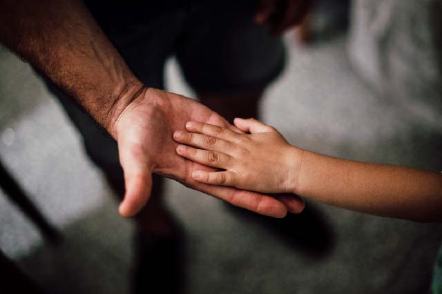

חשוב להבין כי בעיית אכילה בפעוטות מוגדרת כמצב בו יש קושי מתמשך באכילה, אשר לעיתים גם פוגע בעלייה תקינה במשקל ו/או בגובה של הילד. לצורך שלילת סיבות בריאותיות ניתן לפנות למרכזים המתמחים בהפרעות אכילה של פעוטות וילדים.
הסיבה השכיחה ביותר לחוסר רצונו של הילד לאכול היא בגלל מאבקי שליטה בין הילד המתקשה לאכול לבין הוריו שכופים עליו לאכול. כשזה נוגע לפה הילד או השירותים, ההורה לא יכול להחליט עבור הילד, מפני שהמקום שבו הילדים לוקחים שליטה על חייהם זה בסוגרים שלהם. לפי כך, הבחירה אם לאכול או לא היא בידי הילד.
לרוב הילד מסרב לאכול כאמצעי להשגת תשומת לב ואפילו מיקוח, מפני שהילד יודע שבסופו של דבר ההורים ישברו והוא יקבל את מה שהוא רוצה. במקרה כזה לילד צריך להיות ברור שאין לו אלטרנטיבה לארוחה מסודרת ובריאה. למרות הכל לפעמים מדובר בסיבה פשוטה בהרבה: הילד לא רעב.
הנה כמה טיפים מעשיים של משפחתון ריינבו להתמודדות עם ילד שמסרב לאכול:
להימנע ממאבקי כוחות
למרות שבמשפחתון ריינבו נעשה מאמץ לשכנע את הילד המסרב לאכול להצטרף לשאר הילדים בארוחת הגן, לא לוחצים על הילד לסיים את הצלחת. אם הילד רעב, הוא יאכל ואם לא - אז לא נורא.
אם הילד אוכל מעט מידי, יכול מאוד להיות שזה בדיוק מה שהוא צריך. מהבחינה הזו, אין כמות אוכל שהיא "נכונה" לכל הילדים אלא תלויה בילד. ההורים רק יכולים להחליט איזה אוכל יאכל הילד ואילו הילד בוחר כמה לאכול.
גיוון באוכל
קיימת חשיבות לגיוון. המשפחתון מגוון את המזון המוגש לילדים כדי למנוע מהאוכל להימאס עליהם. הגשת אותו סוג מזון שוב ושוב יכולה שלא להתאים להעדפת הטעם שמשתנה אצל הילדים. מה שהיה לא טעים פעם עשוי להיות טעים בפעם אחרת ולהיפך.
תיאבון
הימנעו מלתת כמויות גדולות מדי של מים במהלך הארוחה או מיד לפניה על מנת להשאיר את הנפח הקטן בקיבה פנוי למזון. העיקרון זהה לגבי חטיפים וממתקים שסותמים את התיאבון.
השתדלו שלא להעמיס את הצלחת בכמות אוכל גדולה. כמות גדולה מדי עלולה להרתיע את הילד שחושש שיכריחו אותו לאכול יותר מכפי שהוא באמת רוצה. מומלץ להגיש את האוכל בצלחת קטנה ולא עמוסה מדי ובהמשך ניתן להציע להם תוספת. כמות כזאת תעורר תיאבון רב יותר בניגוד לצלחת גדושה, משום שעודף מזון מרתיע את העיניים ואת הקיבה.
לסיום, זכרו שלכל ילד טעם והעדפות משלו. במקרה שבו ילדכם עדיין לא החל ללכת לגן, כדאי להקפיד ולהציע לילדכם מפעם לפעם לטעום מאכלים שונים שאינו נוהג עדיין לאכול. זאת על מנת להפחית את הסיכוי שיתקל בתפריט לא מוכר בגן החדש.
אם ילדכם כבר רשום לגן ועוד לא החל ללכת אליו, ניתן לשאול את הגננת אילו מזונות מופיעים בתפריט הגן באותו זמן וכך לחשוף את הילד שלכם למאכלים האלה כבר בבית כדי שיכיר את התפריט בגן החדש. זכרו שיש להציע מזון חדש במספר רב של הזדמנויות עד שהילד מתרגל ולומד לאהוב אותו.